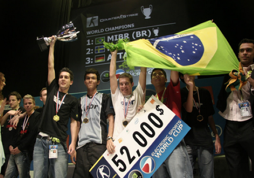

História dos E-SPORTS no Brasil
O mundo de competição e-sports é um mundo muito recente, e consiste em competições de diversos jogos eletrônicos (os chamados Games). Tendo cada um suas devidas regras e empresas responsáveis por realizar suas competições.
O Brasil é um país que vem em constante ascensão no cenário de Games competitivos (os chamados e-sports). O primeiro título mundial de e-sports da história do Brasil foi um título individual em 2002 no jogo “Magic: The Gathering”, com o jogador Carlos “Jaba”, que faturou o título mundial não só nessa ocasião, como também em 2010. A primeira equipe brasileira a conquistar um título mundial coletivo foi a MIBR em 2006, no jogo “Counter-Strike 1.6” vencendo a poderosa Fnatic, na final da Electronic Sports World Cup (ESWC). A equipe era formada pelos seguintes jogadores: Bruno "bit", Lincoln "fnx", Renato "nak", Raphael "cogu" e Carlos "KIKO". Na ocasião, os brasileiros derrotaram os suecos por 16 a 6.

O título mundial mais recente de um time brasileiro foi no dia 18 de setembro de 2022, quando o time brasileiro “LOUD”, composta pelos jogadores: Gustavo "Sacy", Matias "Saadhak", Erick "aspas", Bryan "pANcada" e Felipe "Less", com o técnico Matheus "bzka" bateu o time americano OpTic Gaming no campeonato mundial de Valorant, o “Valorant Champions”, por 3x1 na grande final. Nos playoffs, o time brasileiro nem passou sufoco, e venceu todas as partidas na chave superior, sem ir nenhuma vez pela repescagem. Na jornada pelo título, a LOUD passou pelos times: “Leviatán” (argentina) por 2x0, “DRX” (Coréia do Sul) por 2x0 tamém, e contra a própria OpTic Gaming (EUA) na final da chave superior (a OpTic Gaming foi então para a repescagem, onde se classificou para enfrentar o time brasileiro na grande final).